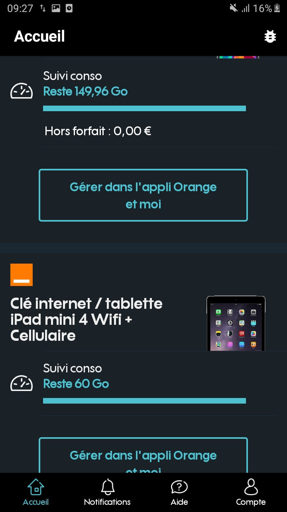
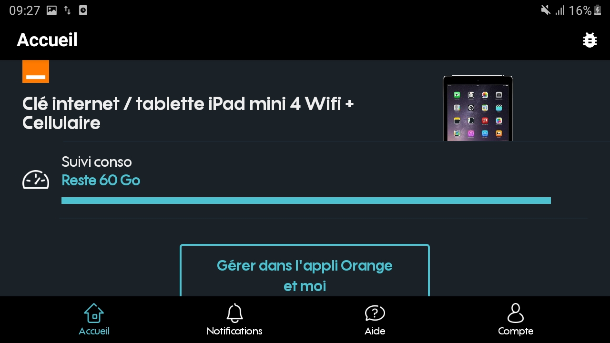
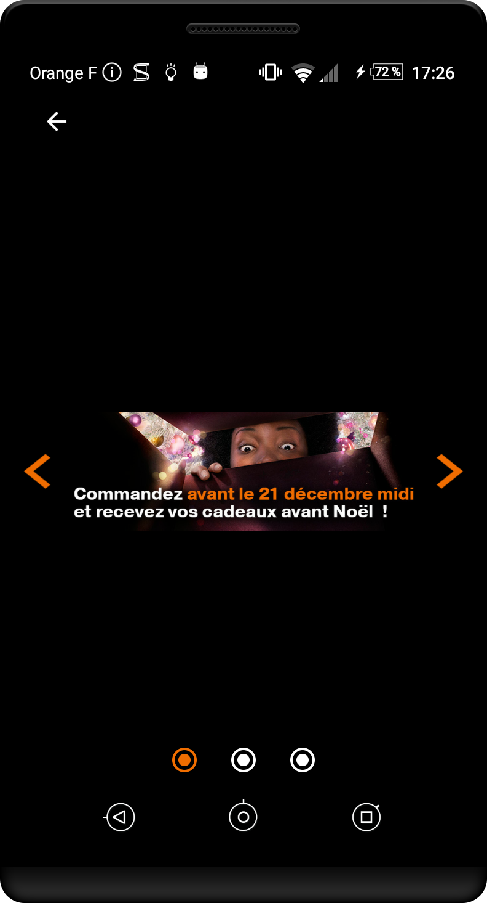
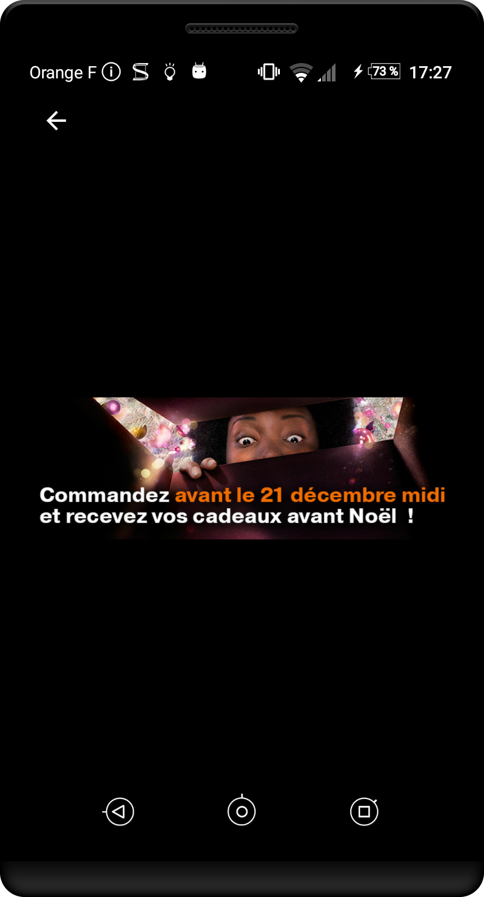

Android designer - Navigation générale
Avoir des zones de clic suffisamment grandes #
Cible : pour tous et en particulier les personnes avec des déficiences motrices.
Quand : dès la phase de conception et lors du développement.
Description :
Une taille insuffisante pour la zone d’action d’un composant peut empêcher certains utilisateurs de profiter pleinement de l’application. Cela peut engendrer des frustrations qui peuvent conduire à la désinstallation de l’application. Chaque élément cliquable de l’application doit donner à l’utilisateur une taille suffisante pour sa zone d’action.
Certaines exceptions sont cependant à noter :
- Si l'action proposée a un équivalent dans l'écran qui respecte la taille requise
- Si l'élément cliquable fait partie d'une zone ou d'un bloc de texte (ce qui est fréquemment le cas des liens notamment).
À vérifier :
- La zone de clic a une taille d'au minimum 48 dp
- La zone de clic a une marge autour de l'élément d'au moins 8 dp
- Les erreurs de clic peuvent être annulées en déplaçant son doigt hors de la zone cliquable avant de relâcher
Outil :
L’application AccessibilityScanner permet de tester directement vos applications sur certains critères d’accessibilité et notamment la taille des zones de clic. Disponible à partir d’Android 6.
Exemple valide :
Dans les exemples ci-dessous, le cadre noir correspond à la taille de la zone interactive.

Exemple non-valide :

Référence WCAG :
Avoir une application utilisable quelle que soit l'orientation #
Cible : tout le monde et en particulier les personnes avec des déficiences visuelles ou motrices.
Quand : lors de la conception et lors du développement.
Description :
L’accès au contenu d’une application ne doit pas dépendre de l’orientation de l’écran (portrait et paysage), sauf si une orientation particulière est essentielle pour la compréhension ou l’utilisation du contenu (projection, tableau…).
À vérifier :
- L’utilisation de composants graphiques standard qui supportent les deux modes (fragments…), ou définir un
designspécifique à chaque orientation. - L’application n’est pas verrouillée dans un mode (portrait ou paysage).
Exemple valide :
L'application reste utilisable en mode portrait et en mode paysage


Référence WCAG :
Proposer une alternative aux actions gestuelles #
Cible : tout le monde et en particulier les personnes avec des déficiences visuelles et/ou motrices.
Quand : dès la phase de conception et lors du développement.
Description :
Naviguer entre plusieurs pages à l'aide d'un swipe horizontal (avec les ViewPager notamment) peut devenir très complexe pour les personnes ayant des déficiences motrices ou visuelles. Il est donc essentiel d'ajouter une alternative, à l'aide de boutons « suivant » et « précédent » par exemple.
À vérifier :
- Les actions déclenchées par un geste de l'utilisateur ou un mouvement de l'appareil dispose d'une alternative.
Exemple valide :
Exemple non-valide :
Référence WCAG :
Proposer des textes lisibles #
Cible : tout le monde et en particulier les personnes ayant des déficiences visuelles et les personnes dyslexiques.
Quand : dès la phase de conception et lors du développement.
Description :
Le texte peut poser des problèmes de lisibilité lorsque celui-ci présente une police d'écriture avec de l'empâtement ou que sa taille du texte est trop petite. Il est notamment recommandé d'utiliser une taille minimum de 14sp pour les textes.
Android propose nativement la police Roboto qui se compose de 16 variantes, dont de nombreuses sans serif qui sont parfaitement adaptées au besoin de lisibilité : roboto regular, roboto thin, roboto medium, etc... En revanche, les polices serif, comme les populaires Times New Roman ou Georgia, ne sont pas adaptées.
À vérifier :
- La police d'écriture est sans serif
- Les textes sont suffisamment grands pour être lus confortablement
- Il n'y a pas d'italique utilisé
Référence WCAG :
Utiliser les composants natifs #
Cible : tout le monde.
Quand : en phase de sélection des briques logicielles et lors des développements.
Description :
L’accessibilité est prise en compte dans les composants natifs (la plupart du temps). De plus, l’utilisation de composants standards permet à l’utilisateur de se retrouver dans une situation et un comportement habituels. La navigation dans une interface standard est donc plus confortable.
Utiliser au maximum les composants natifs en modifiant leur apparence. Si aucun composant standard ne permet de répondre au besoin, créer un composant dédié basé sur un composant standard en veillant à conserver la cohérence de navigation et l’accessibilité.
Rendre adaptable les limites de temps provoquant un changement de contexte #
Cible : tout le monde et en particulier les personnes ayant des déficiences visuelles et/ou motrices.
Quand : dès la phase de conception et lors du développement.
Description :
Sur certaines applications, il arrive que le contexte change après un certain délai. C'est le cas par exemple pour les lecteurs vidéo : il est fréquent que les boutons de contrôles associés à la vidéo disparaissent après une dizaine de secondes sans interaction.
Cette évolution automatique de l'interface pose cependant un problème pour l'accessibilité, une personne ayant peut-être besoin de plus de temps pour interagir avec les éléments. Ce délai doit donc pouvoir être adapté selon le besoin de chaque utilisateur.
Une option d'accessibilité nommée "Time to take action" existe depuis Android 10, et permet de définir son propre timeout. En faisant appel à cette option depuis son application, il est possible d'adapter ses interfaces avec timeout à l'utilisateur.
Cependant, tout les téléphones n'utilisant pas nécessairement une version d'Android récente, il est recommandé de proposer directement au sein de l'application un paramètrage de ce delai.
À vérifier :
- Une limite de temps a son délai paramétrable
Référence WCAG :